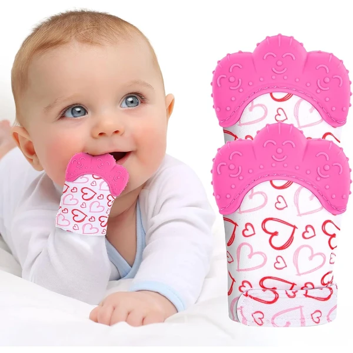
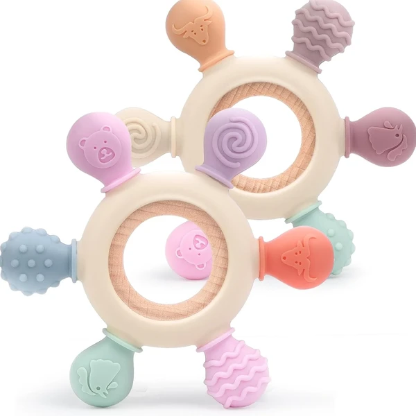
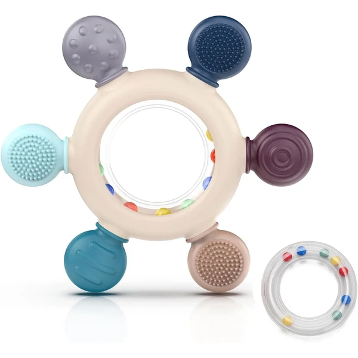
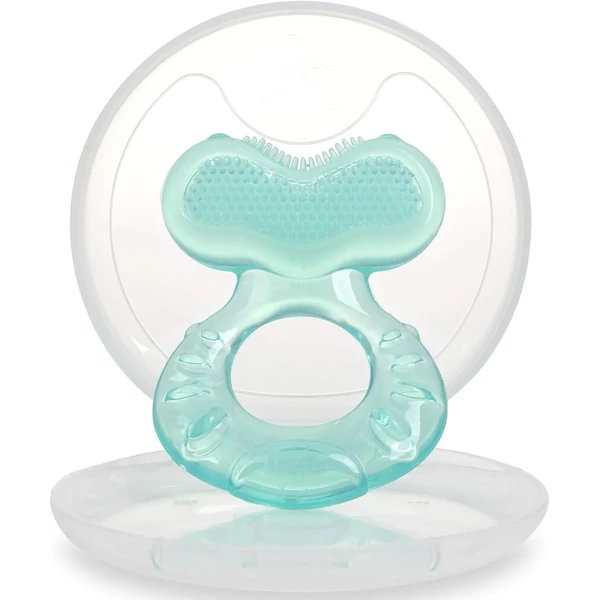
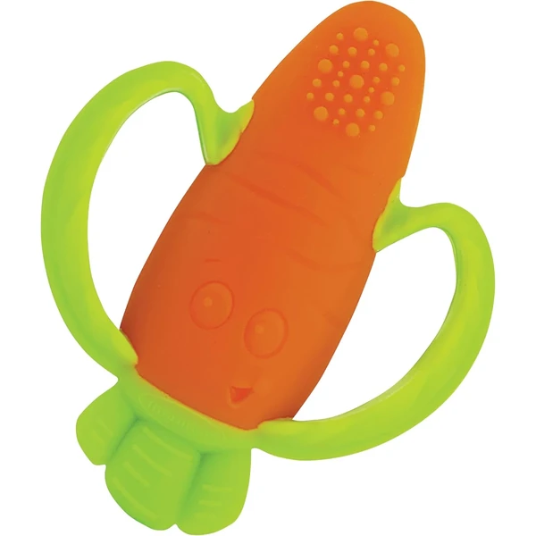
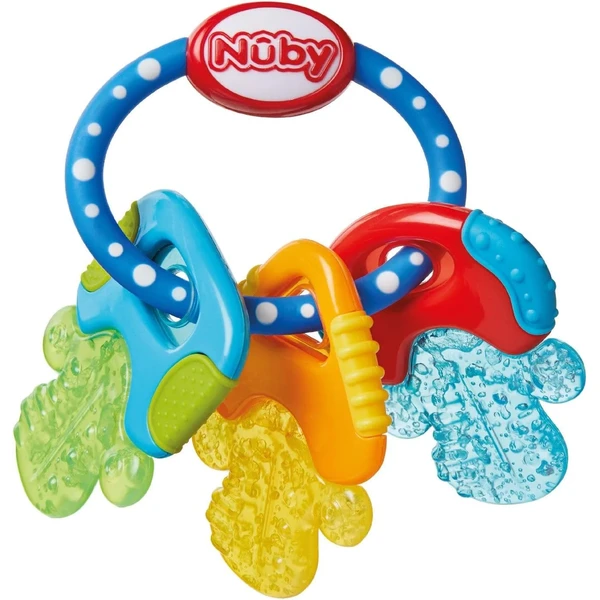

Manoplas mordedor Vicloon
Un pack de dos guantes de silicona que el bebé puede llevar puestos para morder con seguridad y aliviar las encías. El cierre de velcro se ajusta al tamaño de la mano para que no se caigan.
⭐ ¿Por qué nos gusta?
- ✔ Se sujetan a la mano, así no se caen ni se pierden.
- ✔ Silicona apta para morder sin riesgo de arañazos.
- ✔ Aptos para lavadora.
💬 Lo que más destacan las familias
Muchos padres coinciden en que estas manoplas son un salvavidas cuando el bebé aún no controla bien las manos, porque no se le caen ni se pierden por la cuna. También se valora que se puedan meter en la lavadora sin complicaciones.
Ver en Amazon

Precucharas de silicona Okonkn
Un pack de dos precucharas de silicona en dos etapas, pensadas para acompañar los primeros bocados de puré y cereales. Su textura también ayuda a aliviar las encías durante la dentición.
⭐ ¿Por qué nos gusta?
- ✔ Dos etapas para acompañar el aprendizaje de comer solo.
- ✔ Mango corto y grueso, fácil de agarrar.
- ✔ Sin BPA, apto para lavavajillas.
💬 Lo que más destacan las familias
Una de las cosas más comentadas es que el mango corto y grueso hace que el bebé aprenda antes a llevarse la cuchara solo a la boca. También se valora que sirvan de paso para calmar las encías entre toma y toma.
Ver en Amazon

Mordedor de silicona akolik
Un mordedor de silicona con varias texturas y colores, pensado para masajear las encías y facilitar el agarre desde los primeros meses. Se puede enfriar o esterilizar con calor para mantenerlo limpio.
⭐ ¿Por qué nos gusta?
- ✔ Seis colores y cuatro texturas distintas.
- ✔ Tamaño adaptado a manos pequeñas.
- ✔ Apto para esterilizar con calor o frío.
💬 Lo que más destacan las familias
Los compradores valoran especialmente que las distintas texturas mantienen el interés del bebé más tiempo que un mordedor liso. Se comenta también que resulta fácil de esterilizar entre uso y uso.
Ver en Amazon

Mordedor de silicona Teethe-eez Nuby
Un anillo de dentición de silicona muy suave con distintas superficies para masajear las encías. Incluye una funda higiénica para llevarlo siempre limpio fuera de casa.
⭐ ¿Por qué nos gusta?
- ✔ Silicona extra suave, apto desde los 3 meses.
- ✔ Varias superficies para masajear las encías.
- ✔ Incluye funda higiénica de transporte.
💬 Lo que más destacan las familias
Entre los comentarios más habituales aparece lo blandito que resulta al tacto, algo que se agradece en las primeras semanas de dentición. La funda higiénica también gusta, porque evita que se ensucie dentro del bolso.
Ver en Amazon

Mordedor zanahoria Infantino
Un mordedor de silicona con forma de zanahoria, con un asa fácil de agarrar y texturas en las hojas y la punta. Pensado para calmar las encías y estimular el tacto con colores vivos.
⭐ ¿Por qué nos gusta?
- ✔ Asa práctica, fácil de agarrar.
- ✔ Texturas distintas en hojas y punta.
- ✔ Silicona suave sin BPA.
💬 Lo que más destacan las familias
Se repite bastante el comentario de que el diseño de zanahoria llama mucho la atención del bebé, más que un mordedor con forma neutra. El asa también se valora porque facilita que lo sujete solo casi desde el principio.
Ver en Amazon

Mordedor refrigerante IcyBite Nuby
Un mordedor con gel interior que se enfría en la nevera para aliviar las encías durante la dentición, con distintas texturas y colores llamativos. Pensado para masajear también los primeros molares.
⭐ ¿Por qué nos gusta?
- ✔ Gel refrigerante para un alivio más duradero.
- ✔ Texturas variadas que masajean las encías.
- ✔ Colores llamativos que estimulan la vista.
💬 Lo que más destacan las familias
No es raro encontrar comentarios sobre el alivio extra que da el frío en los días de más molestia con las encías. Los colores llamativos también parecen ayudar a que el bebé se enganche a él más rápido que a otros mordedores.
Ver en Amazon